<!DOCTYPE html>
<html lang="en">
  <head>
    <meta charset="utf-8" />
    <meta name="viewport" content="width=device-width, initial-scale=1.0, maximum-scale=1.0, user-scalable=no" />

    <title></title>
    <link rel="stylesheet" href="dist/reveal.css" />
    <link rel="stylesheet" href="dist/theme/white.css" id="theme" />
    <link rel="stylesheet" href="github" />
	<link rel="stylesheet" href="css/layout.css" />
	<link rel="stylesheet" href="plugin/customcontrols/style.css">


    <link rel="stylesheet" href=":root {
  --r-heading-color: #1565C0;
  --r-heading-font: 'Georgia'" />
    <link rel="stylesheet" href=" serif;
  --r-main-font: 'Segoe UI'" />
    <link rel="stylesheet" href=" sans-serif;
  --r-main-font-size: 30px;
}
.reveal .slides section { text-align: left; vertical-align: top; }
.reveal h1" />
    <link rel="stylesheet" href=" .reveal h2" />
    <link rel="stylesheet" href=" .reveal h3 { text-transform: none; letter-spacing: 0; }
.reveal h1 { font-size: 2em; }
.reveal h2 { font-size: 1.45em; margin-bottom: 0.2em; }
.reveal h3 { font-size: 1.1em; color: #333; }
.reveal blockquote { border-left: 5px solid #1565C0; background: #E3F2FD; padding: 12px 20px; font-style: italic; }
.reveal table { font-size: 0.85em; }
.muted { color: #888; font-size: 0.7em; }
" />

    <script defer src="dist/fontawesome/all.min.js"></script>

	<script type="text/javascript">
		var forgetPop = true;
		function onPopState(event) {
			if(forgetPop){
				forgetPop = false;
			} else {
				parent.postMessage(event.target.location.href, "app://obsidian.md");
			}
        }
		window.onpopstate = onPopState;
		window.onmessage = event => {
			if(event.data == "reload"){
				window.document.location.reload();
			}
			forgetPop = true;
		}

		function fitElements(){
			const itemsToFit = document.getElementsByClassName('fitText');
			for (const item in itemsToFit) {
				if (Object.hasOwnProperty.call(itemsToFit, item)) {
					var element = itemsToFit[item];
					fitElement(element,1, 1000);
					element.classList.remove('fitText');
				}
			}
		}

		function fitElement(element, start, end){

			let size = (end + start) / 2;
			element.style.fontSize = `${size}px`;

			if(Math.abs(start - end) < 1){
				while(element.scrollHeight > element.offsetHeight){
					size--;
					element.style.fontSize = `${size}px`;
				}
				return;
			}

			if(element.scrollHeight > element.offsetHeight){
				fitElement(element, start, size);
			} else {
				fitElement(element, size, end);
			}		
		}


		document.onreadystatechange = () => {
			fitElements();
			if (document.readyState === 'complete') {
				if (window.location.href.indexOf("?export") != -1){
					parent.postMessage(event.target.location.href, "app://obsidian.md");
				}
				if (window.location.href.indexOf("print-pdf") != -1){
					let stateCheck = setInterval(() => {
						clearInterval(stateCheck);
						window.print();
					}, 250);
				}
			}
	};


        </script>
  </head>
  <body>
    <div class="reveal">
      <div class="slides"><section  data-markdown><script type="text/template"><!-- .slide: style="text-align: center" class="has-dark-background drop" data-background-color="#1565C0" -->
<div class="" style="position: absolute; left: 0px; top: 0px; height: 1080px; width: 1920px; min-height: 1080px; display: flex; flex-direction: column; align-items: start; justify-content: center" absolute="true">

<div class="" style="position: absolute; left: 10%; top: 15%; height: 70%; width: 80%; display: flex; flex-direction: column; align-items: start; justify-content: center" align="center">


# <!-- .element: style="color: #fff; font-size: 2.2em" --> Цифровая коммеморация Великой Отечественной войны

### <!-- .element: style="color: #BBDEFB; font-weight: 300" --> Количественный анализ платформы «Бессмертный полк»

**981 467 карточек · 2012–2025 · moypolk.ru** <!-- .element: style="color: #90CAF9" -->

IEEE USBEREIT 2026 <!-- .element: style="color: rgba(255,255,255,0.5); font-size: 0.7em" -->

</div>
</div></script></section><section  data-markdown><script type="text/template"><!-- .slide: class="drop" -->
<div class="" style="position: absolute; left: 0px; top: 0px; height: 1080px; width: 1920px; min-height: 1080px; display: flex; flex-direction: column; align-items: start; justify-content: center" absolute="true">

## План семинара (~60 минут)

| | Раздел | Время |
|---|--------|-------|
| 📈 | Временны́е паттерны | 12 мин |
| 📝 | Анализ текстов (NLP) | 20 мин |
| 🗺️ | География памяти | 8 мин |
| 📊 | Digital Memory Index | 5 мин |
| 🎖️ | Демография | 5 мин |
| 🔬 | Синтез и выводы | 8 мин |
</div></script></section><section  data-markdown><script type="text/template"><!-- .slide: class="drop" -->
<div class="" style="position: absolute; left: 0px; top: 0px; height: 1080px; width: 1920px; min-height: 1080px; display: flex; flex-direction: column; align-items: start; justify-content: center" absolute="true">

## Зачем математикам изучать память о войне?

Масштаб данных **исключает** ручной анализ:

- **981 467** мемориальных карточек
- **~640 000** текстовых биографий
- **83 региона** России и СНГ
- **12 лет** непрерывного потока данных

> Методы NLP, статистики и ML позволяют увидеть то, что невозможно прочитать
</div></script></section><section  data-markdown><script type="text/template"><!-- .slide: class="drop" -->
<div class="" style="position: absolute; left: 0px; top: 0px; height: 1080px; width: 1920px; min-height: 1080px; display: flex; flex-direction: column; align-items: start; justify-content: center" absolute="true">

<div class="" style="position: absolute; left: 0%; top: 1%; height: 8%; width: 100%; display: flex; flex-direction: column; align-items: start; justify-content: flex-start" align="left">


## Данные и инструменты

</div>

<div class="" style="position: absolute; left: 0%; top: 12%; height: 82%; width: 48%; display: flex; flex-direction: column; align-items: start; justify-content: flex-start" align="left">


### Поля карточки

- **ФИО**, звание, специальность
- Дата рождения / гибели
- Место рождения, место призыва
- Биографический текст (**story**)
- Фотографии, награды
- Регион подачи, дата публикации

</div>

<div class="" style="position: absolute; left: 51%; top: 12%; height: 82%; width: 48%; display: flex; flex-direction: column; align-items: start; justify-content: flex-start" align="left">


### Заполненность

| Поле | % |
|------|---|
| С историей | ~65% |
| С фото | ~80% |
| С наградами | ~30% |
| С местом рождения | ~55% |
| С датой рождения | ~50% |

Инструменты: **DuckDB**, **scikit-learn**, **Natasha**, **Plotly**

</div>
</div></script></section><section  data-markdown><script type="text/template"><!-- .slide: class="drop" -->
<div class="" style="position: absolute; left: 0px; top: 0px; height: 1080px; width: 1920px; min-height: 1080px; display: flex; flex-direction: column; align-items: start; justify-content: center" absolute="true">

## Четыре исследовательских вопроса

**RQ1 — Темпоральный:** как динамика подачи карточек связана с общественно-политическими событиями?

**RQ2 — Текстовый:** какие модели нарратива доминируют и как эволюционируют?

**RQ3 — Пространственный:** существует ли географическое неравенство в цифровой коммеморации?

**RQ4 — Демографический:** как возрастная структура погибших соотносится с военной историей?
</div></script></section><section  data-markdown><script type="text/template"><!-- .slide: style="text-align: center" class="has-dark-background drop" data-background-color="#1565C0" -->
<div class="" style="position: absolute; left: 0px; top: 0px; height: 1080px; width: 1920px; min-height: 1080px; display: flex; flex-direction: column; align-items: start; justify-content: center" absolute="true">

<div class="" style="position: absolute; left: 10%; top: 35%; height: 30%; width: 80%; display: flex; flex-direction: column; align-items: start; justify-content: center" align="center">


# <!-- .element: style="color: #fff" --> Часть I. Временны́е паттерны

### <!-- .element: style="color: #BBDEFB; font-weight: 300" --> Когда и почему люди помнят

</div>
</div></script></section><section  data-markdown><script type="text/template"><!-- .slide: class="drop" -->
<div class="" style="position: absolute; left: 0px; top: 0px; height: 1080px; width: 1920px; min-height: 1080px; display: flex; flex-direction: column; align-items: start; justify-content: center" absolute="true">

<div class="" style="position: absolute; left: 0%; top: 1%; height: 8%; width: 100%; display: flex; flex-direction: column; align-items: start; justify-content: flex-start" align="left">


## Помесячная динамика: два аномальных пика

</div>

<div class="" style="position: absolute; left: 0%; top: 12%; height: 82%; width: 55%; display: flex; flex-direction: column; align-items: start; justify-content: flex-start" align="left">


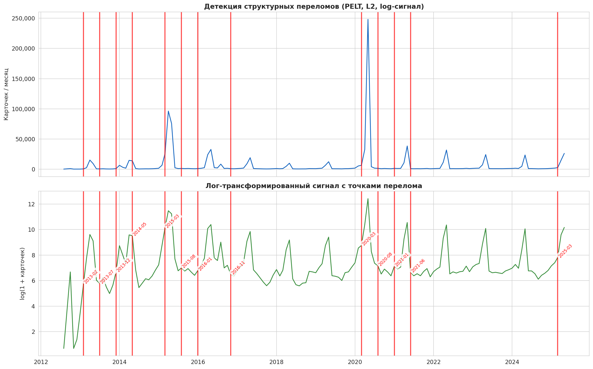


*Рис. A.2 — Детекция структурных переломов (PELT, log-сигнал)* <!-- .element: class="muted" -->

</div>

<div class="" style="position: absolute; left: 57%; top: 12%; height: 82%; width: 42%; display: flex; flex-direction: column; align-items: start; justify-content: flex-start" align="left">


### Май 2015: 70-летие Победы
~97 000 карточек. Шествие стало общенациональным.

### Май 2020: COVID-19
**248 299 карточек** — абсолютный рекорд.
Офлайн-шествия запрещены → вся активность онлайн.

> Парадокс: пандемия породила крупнейший всплеск цифровой коммеморации

</div>
</div></script></section><section  data-markdown><script type="text/template"><!-- .slide: class="drop" -->
<div class="" style="position: absolute; left: 0px; top: 0px; height: 1080px; width: 1920px; min-height: 1080px; display: flex; flex-direction: column; align-items: start; justify-content: center" absolute="true">

<div class="" style="position: absolute; left: 0%; top: 1%; height: 8%; width: 100%; display: flex; flex-direction: column; align-items: start; justify-content: flex-start" align="left">


## PELT: поиск структурных переломов

</div>

<div class="" style="position: absolute; left: 0%; top: 12%; height: 82%; width: 55%; display: flex; flex-direction: column; align-items: start; justify-content: flex-start" align="left">


### Алгоритм

Минимизирует: **Σ C(y[τᵢ : τᵢ₊₁]) + β · m**

- C — дисперсия внутри сегмента (L2)
- β — штраф за каждый разрез
- m — число переломов

### Проблема и решение

Май 2020 в **250×** выше фона → алгоритм «не видит» структуру.

**Решение:** log(1+x) — сжимает выбросы с 250:1 до 1,8:1

*Killick, Fearnhead & Eckley, JASA 2012* <!-- .element: class="muted" -->

</div>

<div class="" style="position: absolute; left: 57%; top: 12%; height: 82%; width: 42%; display: flex; flex-direction: column; align-items: start; justify-content: flex-start" align="left">


### Результат: 13 переломов

| Дата | Событие |
|------|---------|
| 2013-02 | Старт платформы |
| 2015-03 | Подготовка к 70-летию |
| 2015-08 | Спад после юбилейного пика |
| 2020-03 | Начало COVID |
| 2020-08 | Спад после рекорда |
| 2025-03 | Подготовка к 80-летию |

Каждый перелом **содержательно интерпретируем** — ни один не является статистическим артефактом.

</div>
</div></script></section><section  data-markdown><script type="text/template"><!-- .slide: class="drop" -->
<div class="" style="position: absolute; left: 0px; top: 0px; height: 1080px; width: 1920px; min-height: 1080px; display: flex; flex-direction: column; align-items: start; justify-content: center" absolute="true">

<div class="" style="position: absolute; left: 0%; top: 1%; height: 8%; width: 100%; display: flex; flex-direction: column; align-items: start; justify-content: flex-start" align="left">


## Сезонность: 57% всех карточек — в мае

</div>

<div class="" style="position: absolute; left: 0%; top: 12%; height: 82%; width: 55%; display: flex; flex-direction: column; align-items: start; justify-content: flex-start" align="left">


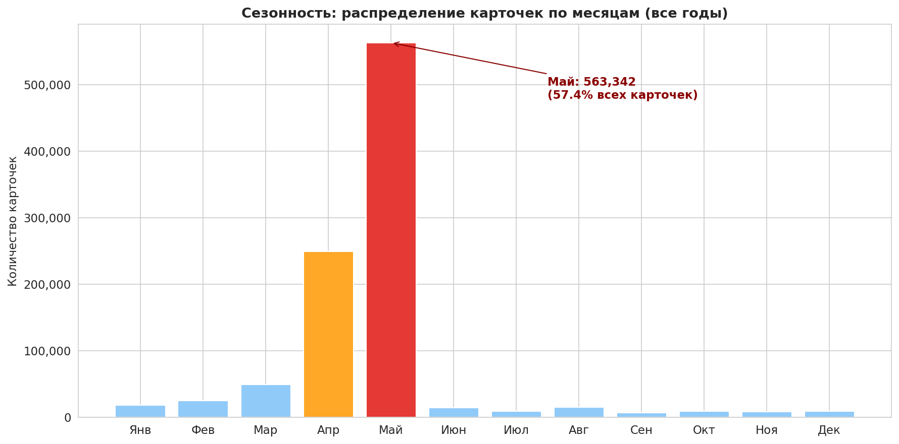


*Рис. A.3 — Распределение по месяцам (все годы)* <!-- .element: class="muted" -->

</div>

<div class="" style="position: absolute; left: 57%; top: 12%; height: 82%; width: 42%; display: flex; flex-direction: column; align-items: start; justify-content: flex-start" align="left">


### χ²-тест на равномерность

**χ² = 3 714 684**, p ≈ 0

| Период | Доля |
|--------|------|
| Май | **57,4%** |
| Апрель + Май | **82,9%** |
| Остальные 10 мес. | 17,1% |

### «Апрельская аномалия» 2015

Пик — в **апреле** (45,3%), не в мае!
Люди готовили плакаты для офлайн-шествия **заранее**.

</div>
</div></script></section><section  data-markdown><script type="text/template"><!-- .slide: class="drop" -->
<div class="" style="position: absolute; left: 0px; top: 0px; height: 1080px; width: 1920px; min-height: 1080px; display: flex; flex-direction: column; align-items: start; justify-content: center" absolute="true">

<div class="" style="position: absolute; left: 0%; top: 1%; height: 8%; width: 100%; display: flex; flex-direction: column; align-items: start; justify-content: flex-start" align="left">


## Нормализованные профили и полураспад

</div>

<div class="" style="position: absolute; left: 0%; top: 12%; height: 82%; width: 48%; display: flex; flex-direction: column; align-items: start; justify-content: flex-start" align="left">


*Рис. A.4 — Нормализованные профили (пик = 100%)* <!-- .element: class="muted" -->

Формат (офлайн / онлайн) оставляет **измеримый цифровой отпечаток** в данных.

</div>

<div class="" style="position: absolute; left: 51%; top: 12%; height: 82%; width: 48%; display: flex; flex-direction: column; align-items: start; justify-content: flex-start" align="left">


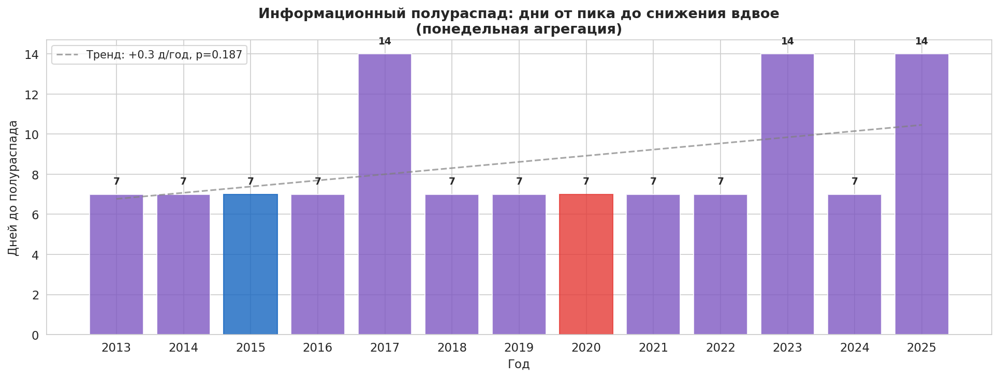


*Рис. A.5 — Информационный полураспад* <!-- .element: class="muted" -->

| Метрика | Значение |
|---------|----------|
| Медиана | **7 дней** |
| Тренд | +0,3 д/год (p = 0,187) |

Для сравнения: Twitter-хэштег ~24ч, новость ~36ч.

</div>
</div></script></section><section  data-markdown><script type="text/template"><!-- .slide: style="text-align: center" class="has-dark-background drop" data-background-color="#1565C0" -->
<div class="" style="position: absolute; left: 0px; top: 0px; height: 1080px; width: 1920px; min-height: 1080px; display: flex; flex-direction: column; align-items: start; justify-content: center" absolute="true">

<div class="" style="position: absolute; left: 10%; top: 35%; height: 30%; width: 80%; display: flex; flex-direction: column; align-items: start; justify-content: center" align="center">


# <!-- .element: style="color: #fff" --> Часть II. Анализ текстов

### <!-- .element: style="color: #BBDEFB; font-weight: 300" --> Как люди рассказывают о своих ветеранах

</div>
</div></script></section><section  data-markdown><script type="text/template"><!-- .slide: class="drop" -->
<div class="" style="position: absolute; left: 0px; top: 0px; height: 1080px; width: 1920px; min-height: 1080px; display: flex; flex-direction: column; align-items: start; justify-content: center" absolute="true">

<div class="" style="position: absolute; left: 0%; top: 1%; height: 8%; width: 100%; display: flex; flex-direction: column; align-items: start; justify-content: flex-start" align="left">


## Четыре типа мемориального нарратива

</div>

<div class="" style="position: absolute; left: 0%; top: 12%; height: 82%; width: 55%; display: flex; flex-direction: column; align-items: start; justify-content: flex-start" align="left">


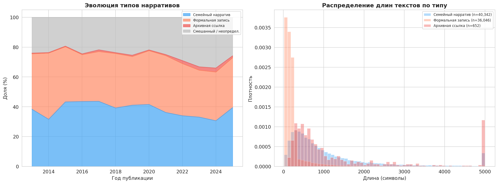


*Рис. B.3 — Эволюция типов нарративов / распределение длин* <!-- .element: class="muted" -->

</div>

<div class="" style="position: absolute; left: 57%; top: 12%; height: 82%; width: 42%; display: flex; flex-direction: column; align-items: start; justify-content: flex-start" align="left">


| Тип | Доля | Мед. длина |
|-----|------|-----------|
| **Семейный** | 40,3% | 709 симв. |
| **Формальный** | 36,0% | 158 симв. |
| Смешанный | 23,0% | — |
| Архивная ссылка | 0,7% | — |

Тест Манна-Уитни: U = 1,29×10⁹, p ≈ 0
**Cohen's d = 0,30**

### Классификатор — rule-based
Маркеры: «дедушка», «помню», «горжусь» → семейный.
Короткий + даты + без «я/мы» → формальный.

</div>
</div></script></section><section  data-markdown><script type="text/template"><!-- .slide: class="drop" -->
<div class="" style="position: absolute; left: 0px; top: 0px; height: 1080px; width: 1920px; min-height: 1080px; display: flex; flex-direction: column; align-items: start; justify-content: center" absolute="true">

## Переход Ассмана: от живой памяти к архивной

Доля **семейных нарративов** снижается: ~44% (2015) → ~30% (2024)

Доля карточек с текстом: **−4,5%/год**, R² = 0,85, p < 0,0001

> **Ян Ассман (2008):** «коммуникативная память» (устная, ~80 лет) → «культурная память» (институционализированная). Наш классификатор **количественно фиксирует** этот переход.

- Первыми карточки подавали **дети и внуки** — живая семейная память
- Позже присоединились те, кто копирует из **ОБД Мемориал** и **Подвиг народа** — формальные записи без личного голоса
</div></script></section><section  data-markdown><script type="text/template"><!-- .slide: class="drop" -->
<div class="" style="position: absolute; left: 0px; top: 0px; height: 1080px; width: 1920px; min-height: 1080px; display: flex; flex-direction: column; align-items: start; justify-content: center" absolute="true">

<div class="" style="position: absolute; left: 0%; top: 1%; height: 8%; width: 100%; display: flex; flex-direction: column; align-items: start; justify-content: flex-start" align="left">


## Тональность: умеренно позитивная, стабильная

</div>

<div class="" style="position: absolute; left: 0%; top: 12%; height: 82%; width: 55%; display: flex; flex-direction: column; align-items: start; justify-content: flex-start" align="left">


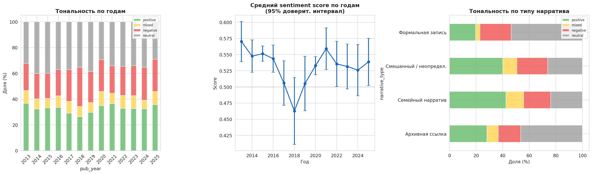


*Рис. B.5 — Тональность по годам / score / по типу нарратива* <!-- .element: class="muted" -->

</div>

<div class="" style="position: absolute; left: 57%; top: 12%; height: 82%; width: 42%; display: flex; flex-direction: column; align-items: start; justify-content: flex-start" align="left">


### Адаптация словаря

«Погиб», «убит», «похоронен» → **нейтральные** военные факты, не негативные

### Результат

| Категория | Доля |
|-----------|------|
| Positive | **33,5%** |
| Neutral | **35,4%** |
| Negative | 22,1% |
| Средний score | **0,540** |

Тренд по годам: **не значим** (p = 0,57).
Эмоциональная окраска памяти стабильна.

</div>
</div></script></section><section  data-markdown><script type="text/template"><!-- .slide: class="drop" -->
<div class="" style="position: absolute; left: 0px; top: 0px; height: 1080px; width: 1920px; min-height: 1080px; display: flex; flex-direction: column; align-items: start; justify-content: center" absolute="true">

<div class="" style="position: absolute; left: 0%; top: 1%; height: 8%; width: 100%; display: flex; flex-direction: column; align-items: start; justify-content: flex-start" align="left">


## MATTR: тексты становятся шаблоннее

</div>

<div class="" style="position: absolute; left: 0%; top: 12%; height: 82%; width: 55%; display: flex; flex-direction: column; align-items: start; justify-content: flex-start" align="left">


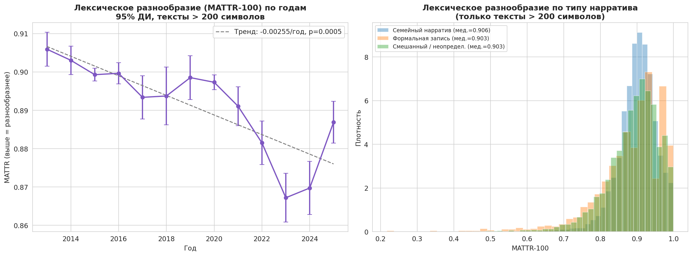


*Рис. B.6 — MATTR-100 по годам (тексты > 200 симв.)* <!-- .element: class="muted" -->

</div>

<div class="" style="position: absolute; left: 57%; top: 12%; height: 82%; width: 42%; display: flex; flex-direction: column; align-items: start; justify-content: flex-start" align="left">


### Что такое MATTR?

Moving Average Type-Token Ratio.
Скользящее окно 100 слов → средний TTR.
Не зависит от длины текста.

### Ключевая находка

| Метрика | Значение |
|---------|----------|
| Тренд | **−0,00255/год** |
| p-value | **0,0005** |
| R² | **0,68** |

За 12 лет: **0,905 → 0,870**

> Живой голос уступает шаблону

</div>
</div></script></section><section  data-markdown><script type="text/template"><!-- .slide: class="drop" -->
<div class="" style="position: absolute; left: 0px; top: 0px; height: 1080px; width: 1920px; min-height: 1080px; display: flex; flex-direction: column; align-items: start; justify-content: center" absolute="true">

<div class="" style="position: absolute; left: 0%; top: 1%; height: 8%; width: 100%; display: flex; flex-direction: column; align-items: start; justify-content: flex-start" align="left">


## LDA: 7 скрытых тем

</div>

<div class="" style="position: absolute; left: 0%; top: 11%; height: 85%; width: 100%; display: flex; flex-direction: column; align-items: start; justify-content: flex-start" align="left">


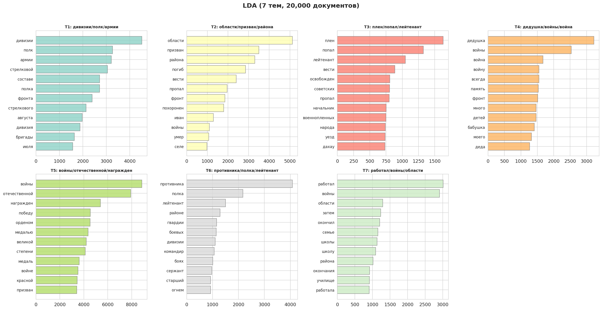


*Рис. B.9 — LDA (7 тем, 20 000 документов): топ-12 слов каждой темы. Оптимум по perplexity (Рис. B.8): k = 7* <!-- .element: class="muted" -->

</div>
</div></script></section><section  data-markdown><script type="text/template"><!-- .slide: class="drop" -->
<div class="" style="position: absolute; left: 0px; top: 0px; height: 1080px; width: 1920px; min-height: 1080px; display: flex; flex-direction: column; align-items: start; justify-content: center" absolute="true">

## Интерпретация тем

| Тема | Ключевые слова | Интерпретация |
|------|----------------|---------------|
| **T1** | дивизии, полк, армии | Конкретный **боевой путь** подразделений |
| **T2** | области, призван, погиб | **Стандартная биография**: призван — погиб — похоронен |
| **T3** | плен, попал, Дахау | **Трагедия плена** и концлагеря |
| **T4** | дедушка, бабушка, память | **Семейная память** — «голос внуков» |
| **T5** | орденом, медалью, награждён | **Награды** — формальные перечни |
| **T6** | противника, гвардии, командир | **Боевые действия** — из наградных листов |
| **T7** | работал, школы, семье | **Мирная жизнь** до и после войны |
</div></script></section><section  data-markdown><script type="text/template"><!-- .slide: class="drop" -->
<div class="" style="position: absolute; left: 0px; top: 0px; height: 1080px; width: 1920px; min-height: 1080px; display: flex; flex-direction: column; align-items: start; justify-content: center" absolute="true">

<div class="" style="position: absolute; left: 0%; top: 1%; height: 8%; width: 100%; display: flex; flex-direction: column; align-items: start; justify-content: flex-start" align="left">


## Валидация: LDA × типы нарративов

</div>

<div class="" style="position: absolute; left: 0%; top: 12%; height: 82%; width: 55%; display: flex; flex-direction: column; align-items: start; justify-content: flex-start" align="left">


*Рис. B.10 — Средние веса тем по типу нарратива* <!-- .element: class="muted" -->

</div>

<div class="" style="position: absolute; left: 57%; top: 12%; height: 82%; width: 42%; display: flex; flex-direction: column; align-items: start; justify-content: flex-start" align="left">


### Два независимых метода → одна структура

| Тип нарратива | Доминирующая тема | Вес |
|--------------|-------------------|-----|
| Архивная ссылка | T2: биография | **0,47** |
| Семейный | T4: дедушка | **0,31** |
| Формальный | T5: награды | **0,36** |

### Cramér's V = 0,287

Сильная связь → **взаимная валидация** классификатора и LDA.

</div>
</div></script></section><section  data-markdown><script type="text/template"><!-- .slide: class="drop" -->
<div class="" style="position: absolute; left: 0px; top: 0px; height: 1080px; width: 1920px; min-height: 1080px; display: flex; flex-direction: column; align-items: start; justify-content: center" absolute="true">

<div class="" style="position: absolute; left: 0%; top: 1%; height: 8%; width: 100%; display: flex; flex-direction: column; align-items: start; justify-content: flex-start" align="left">


## Эволюция тем: дрейф к архивным описаниям

</div>

<div class="" style="position: absolute; left: 0%; top: 12%; height: 82%; width: 55%; display: flex; flex-direction: column; align-items: start; justify-content: flex-start" align="left">


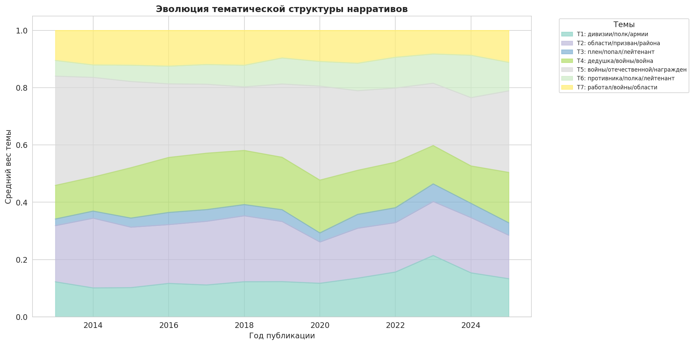


*Рис. B.11 — Эволюция тематической структуры* <!-- .element: class="muted" -->

</div>

<div class="" style="position: absolute; left: 57%; top: 12%; height: 82%; width: 42%; display: flex; flex-direction: column; align-items: start; justify-content: flex-start" align="left">


### ↑ Растут

| Тема | Slope/год | p |
|------|-----------|---|
| T1: боевой путь | +0,005 | 0,013 |
| T3: плен | +0,002 | 0,001 |
| T6: бои | +0,006 | <0,001 |

### ↓ Снижаются

| Тема | Slope/год | p |
|------|-----------|---|
| T2: биография | −0,005 | 0,016 |
| T7: мирная жизнь | −0,002 | 0,030 |

> Причина: оцифровка архивов (ОБД Мемориал, Подвиг народа)

</div>
</div></script></section><section  data-markdown><script type="text/template"><!-- .slide: class="drop" -->
<div class="" style="position: absolute; left: 0px; top: 0px; height: 1080px; width: 1920px; min-height: 1080px; display: flex; flex-direction: column; align-items: start; justify-content: center" absolute="true">

<div class="" style="position: absolute; left: 0%; top: 1%; height: 8%; width: 100%; display: flex; flex-direction: column; align-items: start; justify-content: flex-start" align="left">


## NER: именованные сущности

</div>

<div class="" style="position: absolute; left: 0%; top: 11%; height: 85%; width: 100%; display: flex; flex-direction: column; align-items: start; justify-content: flex-start" align="left">


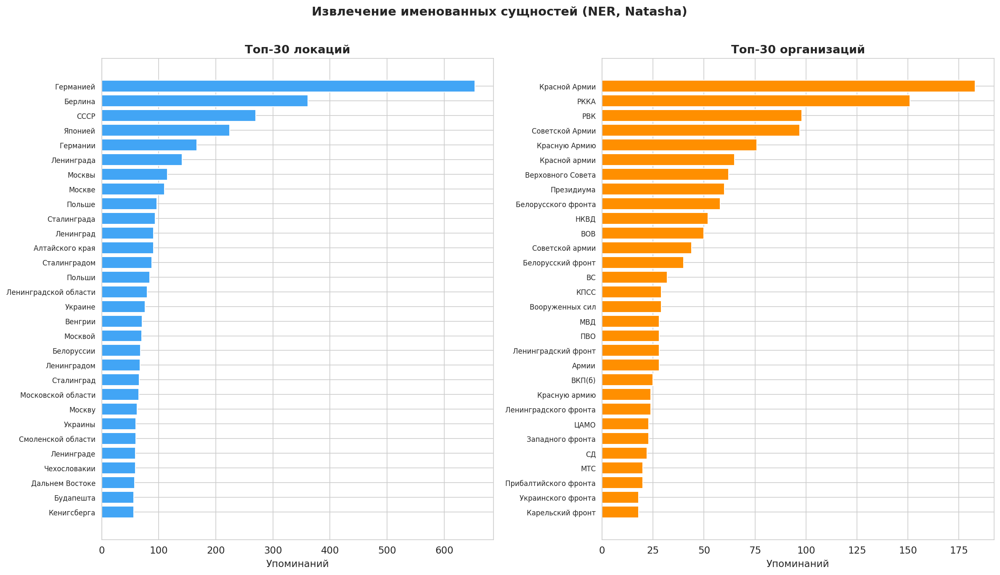


*Рис. B.12 — NER (Natasha): топ-30 локаций и организаций. Из 5 000 текстов: 7 969 локаций, 3 275 организаций* <!-- .element: class="muted" -->

Лидеры: **Германия** (670), **Берлин** (390), **СССР** (310) · **Красная Армия** (180), **РККА** (155), **РВК** (140)

</div>
</div></script></section><section  data-markdown><script type="text/template"><!-- .slide: style="text-align: center" class="has-dark-background drop" data-background-color="#1565C0" -->
<div class="" style="position: absolute; left: 0px; top: 0px; height: 1080px; width: 1920px; min-height: 1080px; display: flex; flex-direction: column; align-items: start; justify-content: center" absolute="true">

<div class="" style="position: absolute; left: 10%; top: 35%; height: 30%; width: 80%; display: flex; flex-direction: column; align-items: start; justify-content: center" align="center">


# <!-- .element: style="color: #fff" --> Часть III. География, DMI, демография

### <!-- .element: style="color: #BBDEFB; font-weight: 300" --> Откуда помнят и кого помнят

</div>
</div></script></section><section  data-markdown><script type="text/template"><!-- .slide: class="drop" -->
<div class="" style="position: absolute; left: 0px; top: 0px; height: 1080px; width: 1920px; min-height: 1080px; display: flex; flex-direction: column; align-items: start; justify-content: center" absolute="true">

<div class="" style="position: absolute; left: 0%; top: 1%; height: 8%; width: 100%; display: flex; flex-direction: column; align-items: start; justify-content: flex-start" align="left">


## Миграция памяти: 46% «мигрировало»

</div>

<div class="" style="position: absolute; left: 0%; top: 12%; height: 82%; width: 55%; display: flex; flex-direction: column; align-items: start; justify-content: flex-start" align="left">


*Рис. C.2 — Матрица миграции (регион рождения → регион подачи)* <!-- .element: class="muted" -->

</div>

<div class="" style="position: absolute; left: 57%; top: 12%; height: 82%; width: 42%; display: flex; flex-direction: column; align-items: start; justify-content: flex-start" align="left">


### Методология

Сравниваем **место рождения** ветерана с **регионом подачи** карточки.

Нормализация: «Сталинградская обл.» = «Волгоградская обл.» (словарь ~40 форм)

### Результат

- **53,9%** — на месте (локальная память)
- **46,1%** — мигрировала

### Горячие точки

- Украина → РФ: **8 758**
- Моск. обл. → Москва: **4 592**
- Ростов. обл. → Краснодар: **5 300**

</div>
</div></script></section><section  data-markdown><script type="text/template"><!-- .slide: class="drop" -->
<div class="" style="position: absolute; left: 0px; top: 0px; height: 1080px; width: 1920px; min-height: 1080px; display: flex; flex-direction: column; align-items: start; justify-content: center" absolute="true">

<div class="" style="position: absolute; left: 0%; top: 1%; height: 8%; width: 100%; display: flex; flex-direction: column; align-items: start; justify-content: flex-start" align="left">


## Сеть межрегиональных связей

</div>

<div class="" style="position: absolute; left: 0%; top: 12%; height: 82%; width: 55%; display: flex; flex-direction: column; align-items: start; justify-content: flex-start" align="left">


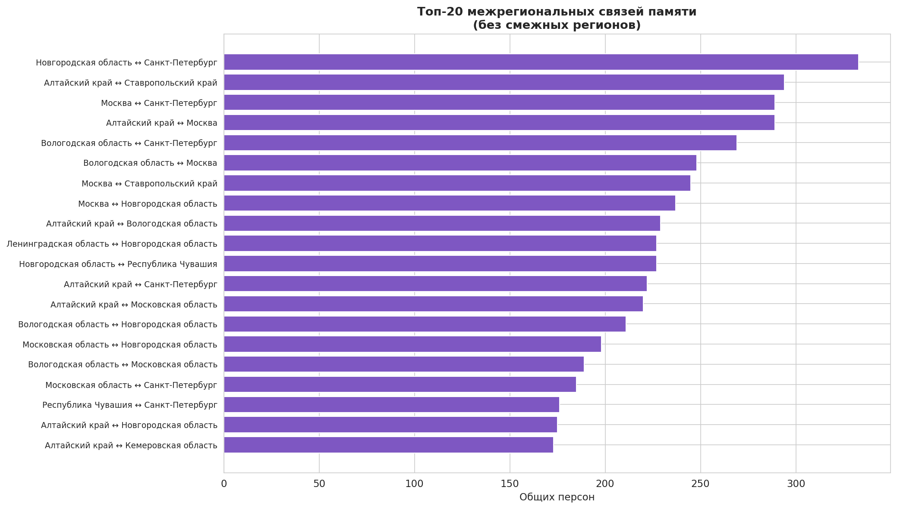


*Рис. C.3 — Топ-20 межрегиональных связей (без смежных)* <!-- .element: class="muted" -->

</div>

<div class="" style="position: absolute; left: 57%; top: 12%; height: 82%; width: 42%; display: flex; flex-direction: column; align-items: start; justify-content: flex-start" align="left">


### Топ-3 связи

1. **Новгородская обл. ↔ СПб** — 335
2. **Алтайский край ↔ Ставрополь** — 295
3. **Москва ↔ СПб** — 285

### Интерпретация

Новгородская обл. — зона тяжёлых боёв (Демянский котёл), потомки живут в Петербурге.

Алтай ↔ Ставрополье — эвакуация + послевоенная аграрная миграция.

> Сеть памяти отражает миграционные потоки XX века

</div>
</div></script></section><section  data-markdown><script type="text/template"><!-- .slide: class="drop" -->
<div class="" style="position: absolute; left: 0px; top: 0px; height: 1080px; width: 1920px; min-height: 1080px; display: flex; flex-direction: column; align-items: start; justify-content: center" absolute="true">

<div class="" style="position: absolute; left: 0%; top: 1%; height: 8%; width: 100%; display: flex; flex-direction: column; align-items: start; justify-content: flex-start" align="left">


## DMI: два типа коммеморации

</div>

<div class="" style="position: absolute; left: 0%; top: 12%; height: 82%; width: 55%; display: flex; flex-direction: column; align-items: start; justify-content: flex-start" align="left">


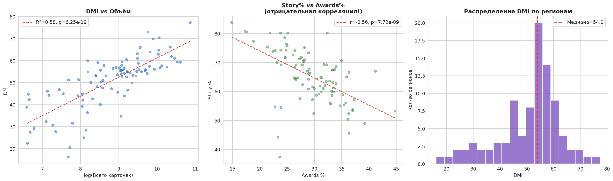


*Рис. D.2 — DMI vs объём · Story% vs Awards% · Распределение DMI* <!-- .element: class="muted" -->

</div>

<div class="" style="position: absolute; left: 57%; top: 12%; height: 82%; width: 42%; display: flex; flex-direction: column; align-items: start; justify-content: flex-start" align="left">


### Формула

DMI = 0,25·Story% + 0,20·Photo% + 0,15·Awards% + 0,20·Volume(log) + 0,20·Diversity

### Ключевая находка

**Story% vs Awards%: r = −0,56** — два типа регионов:
- **Семейная память:** ↑ тексты, ↓ награды
- **Архивная память:** ↓ тексты, ↑ награды

### Неравенство

DMI Gini = **0,125** (умеренное).
Диапазон: 16,2 — 77,3 (разброс 4,8×).

</div>
</div></script></section><section  data-markdown><script type="text/template"><!-- .slide: class="drop" -->
<div class="" style="position: absolute; left: 0px; top: 0px; height: 1080px; width: 1920px; min-height: 1080px; display: flex; flex-direction: column; align-items: start; justify-content: center" absolute="true">

<div class="" style="position: absolute; left: 0%; top: 1%; height: 8%; width: 100%; display: flex; flex-direction: column; align-items: start; justify-content: flex-start" align="left">


## Возрастное распределение по званиям

</div>

<div class="" style="position: absolute; left: 0%; top: 12%; height: 82%; width: 55%; display: flex; flex-direction: column; align-items: start; justify-content: flex-start" align="left">


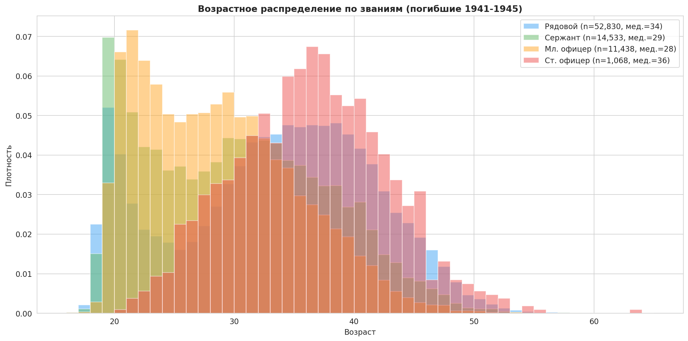


*Рис. E.1 — Возрастное распределение (n = 79 869)* <!-- .element: class="muted" -->

</div>

<div class="" style="position: absolute; left: 57%; top: 12%; height: 82%; width: 42%; display: flex; flex-direction: column; align-items: start; justify-content: flex-start" align="left">


### Медианы возраста

| Звание | Медиана |
|--------|---------|
| Рядовой | **34** года |
| Сержант | **29** лет |
| Мл. офицер | **28** лет |
| Ст. офицер | **36** лет |

Все 6 пар: **p < 10⁻²⁸** (KS-тест)

### Парадокс

Сержанты и мл. офицеры — **самые молодые** среди погибших. Лейтенант на передовой в 1941–42: срок жизни **2–3 недели**.

</div>
</div></script></section><section  data-markdown><script type="text/template"><!-- .slide: class="drop" -->
<div class="" style="position: absolute; left: 0px; top: 0px; height: 1080px; width: 1920px; min-height: 1080px; display: flex; flex-direction: column; align-items: start; justify-content: center" absolute="true">

<div class="" style="position: absolute; left: 0%; top: 1%; height: 8%; width: 100%; display: flex; flex-direction: column; align-items: start; justify-content: flex-start" align="left">


## Конвергенция возрастов: главная находка

</div>

<div class="" style="position: absolute; left: 0%; top: 12%; height: 82%; width: 55%; display: flex; flex-direction: column; align-items: start; justify-content: flex-start" align="left">


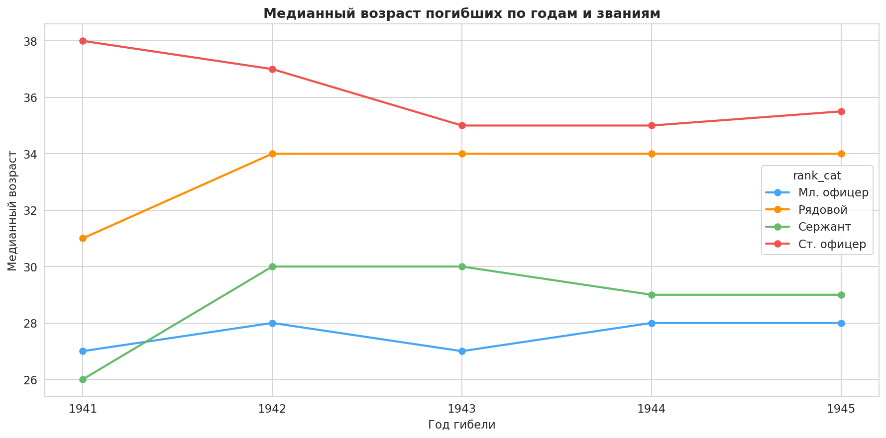


*Рис. E.2 — Медианный возраст по годам и званиям* <!-- .element: class="muted" -->

</div>

<div class="" style="position: absolute; left: 57%; top: 12%; height: 82%; width: 42%; display: flex; flex-direction: column; align-items: start; justify-content: flex-start" align="left">


### Разрыв: ст. офицер − рядовой

| Год | Разрыв |
|-----|--------|
| 1941 | **7,0 лет** |
| 1942 | 3,0 |
| 1943 | 1,0 |
| 1944 | 1,0 |
| 1945 | **1,5 лет** |

### Механизм

Офицеры **«молодеют»:** кадровые выбиты, приходят молодые.

Рядовые **«стареют»:** мобилизация 40–50-летних.

> Тотальная война стирала возрастные барьеры между рангами

</div>
</div></script></section><section  data-markdown><script type="text/template"><!-- .slide: class="drop" -->
<div class="" style="position: absolute; left: 0px; top: 0px; height: 1080px; width: 1920px; min-height: 1080px; display: flex; flex-direction: column; align-items: start; justify-content: center" absolute="true">

## Пять главных результатов

1. **Чувствительность к контексту:** COVID → 248K, PELT: 13 переломов, полураспад **7 дней**
2. **Два типа памяти:** семейная (40%) vs формальная (36%), антикорреляция **r = −0,56**
3. **Шаблонизация:** MATTR **−0,003/год** (p = 0,0005). Story% **−4,5%/год**
4. **Миграция памяти:** 46% мигрировало, DMI Gini = 0,125
5. **Конвергенция:** возрастной разрыв **7 → 1,5 лет** за 4 года войны
</div></script></section><section  data-markdown><script type="text/template"><!-- .slide: class="drop" -->
<div class="" style="position: absolute; left: 0px; top: 0px; height: 1080px; width: 1920px; min-height: 1080px; display: flex; flex-direction: column; align-items: start; justify-content: center" absolute="true">

<div class="" style="position: absolute; left: 0%; top: 1%; height: 8%; width: 100%; display: flex; flex-direction: column; align-items: start; justify-content: flex-start" align="left">


## Ограничения и перспективы

</div>

<div class="" style="position: absolute; left: 0%; top: 12%; height: 82%; width: 48%; display: flex; flex-direction: column; align-items: start; justify-content: flex-start" align="left">


### ⚠️ Ограничения

- Классификатор **rule-based** — 23% неклассифицированных
- Sentiment **словарный** — ирония, горечь ему недоступны
- **Самоотбор** — не случайная выборка населения
- LDA: **bag-of-words**, порядок слов игнорируется
- Нормализация регионов **неполная**

</div>

<div class="" style="position: absolute; left: 51%; top: 12%; height: 82%; width: 48%; display: flex; flex-direction: column; align-items: start; justify-content: flex-start" align="left">


### 🔮 Перспективы

- **RuBERT / LLM** для классификации → ↓ доля «смешанных»
- **BERTopic** вместо LDA → учёт контекста
- **Геокодирование** мест → карта на уровне нас. пунктов
- **Сетевой анализ** авторов → кластеры семей
- **Streamlit-витрина** для открытого доступа

</div>
</div></script></section><section  data-markdown><script type="text/template"><!-- .slide: class="drop" -->
<div class="" style="position: absolute; left: 0px; top: 0px; height: 1080px; width: 1920px; min-height: 1080px; display: flex; flex-direction: column; align-items: start; justify-content: center" absolute="true">

<div class="" style="position: absolute; left: 0%; top: 1%; height: 8%; width: 100%; display: flex; flex-direction: column; align-items: start; justify-content: flex-start" align="left">


## Источники

</div>

<div class="" style="font-size: 0.75em; position: absolute; left: 0%; top: 12%; height: 82%; width: 48%; display: flex; flex-direction: column; align-items: start; justify-content: flex-start" align="left">


### Методы и инструменты

1. Killick et al. (2012) — PELT, *JASA*
2. Blei et al. (2003) — LDA, *JMLR*
3. Covington & McFall (2010) — MATTR
4. Truong et al. (2020) — ruptures
5. Yang & Leskovec (2011) — temporal patterns
6. Wu & Huberman (2007) — collective attention
7. Korobov (2020) — Natasha NER
8. Pedregosa et al. (2011) — scikit-learn

</div>

<div class="" style="font-size: 0.75em; position: absolute; left: 51%; top: 12%; height: 82%; width: 48%; display: flex; flex-direction: column; align-items: start; justify-content: flex-start" align="left">


### Историография и данные

9. Assmann, J. (2008) — коммуникативная/культурная память
10. Hoskins, A. (2018) — *Digital Memory Studies*
11. Nora, P. (1989) — *Les Lieux de Mémoire*
12. Halbwachs, M. (1950) — *On Collective Memory*
13. Кривошеев, Г.Ф. (1993) — *Гриф секретности снят*
14. moypolk.ru · obd-memorial.ru · podvignaroda.ru
15. DuckDB · matplotlib · Plotly

</div>
</div></script></section><section  data-markdown><script type="text/template"><!-- .slide: style="text-align: center" class="has-dark-background drop" data-background-color="#1565C0" -->
<div class="" style="position: absolute; left: 0px; top: 0px; height: 1080px; width: 1920px; min-height: 1080px; display: flex; flex-direction: column; align-items: start; justify-content: center" absolute="true">

<div class="" style="position: absolute; left: 10%; top: 35%; height: 30%; width: 80%; display: flex; flex-direction: column; align-items: start; justify-content: center" align="center">


# <!-- .element: style="color: #fff; font-size: 2.2em" --> Спасибо за внимание

### <!-- .element: style="color: #BBDEFB; font-weight: 300" --> Готов ответить на вопросы

981K · 13 переломов · 7 дней · 7 тем · r = −0,56 · Gini 0,125 · 7 → 1,5 лет <!-- .element: style="color: #90CAF9; font-size: 0.7em" -->

</div>
</div></script></section></div>
    </div>

    <script src="dist/reveal.js"></script>

    <script src="plugin/markdown/markdown.js"></script>
    <script src="plugin/highlight/highlight.js"></script>
    <script src="plugin/zoom/zoom.js"></script>
    <script src="plugin/notes/notes.js"></script>
    <script src="plugin/math/math.js"></script>
	<script src="plugin/mermaid/mermaid.js"></script>
	<script src="plugin/chart/chart.min.js"></script>
	<script src="plugin/chart/plugin.js"></script>
	<script src="plugin/customcontrols/plugin.js"></script>

    <script>
      function extend() {
        var target = {};
        for (var i = 0; i < arguments.length; i++) {
          var source = arguments[i];
          for (var key in source) {
            if (source.hasOwnProperty(key)) {
              target[key] = source[key];
            }
          }
        }
        return target;
      }

	  function isLight(color) {
		let hex = color.replace('#', '');

		// convert #fff => #ffffff
		if(hex.length == 3){
			hex = `${hex[0]}${hex[0]}${hex[1]}${hex[1]}${hex[2]}${hex[2]}`;
		}

		const c_r = parseInt(hex.substr(0, 2), 16);
		const c_g = parseInt(hex.substr(2, 2), 16);
		const c_b = parseInt(hex.substr(4, 2), 16);
		const brightness = ((c_r * 299) + (c_g * 587) + (c_b * 114)) / 1000;
		return brightness > 155;
	}

	var bgColor = getComputedStyle(document.documentElement).getPropertyValue('--r-background-color').trim();
	var isLight = isLight(bgColor);

	if(isLight){
		document.body.classList.add('has-light-background');
	} else {
		document.body.classList.add('has-dark-background');
	}

      // default options to init reveal.js
      var defaultOptions = {
        controls: true,
        progress: true,
        history: true,
        center: true,
        transition: 'default', // none/fade/slide/convex/concave/zoom
        plugins: [
          RevealMarkdown,
          RevealHighlight,
          RevealZoom,
          RevealNotes,
          RevealMath.MathJax3,
		  RevealMermaid,
		  RevealChart,
		  RevealCustomControls,
        ],


    	allottedTime: 120 * 1000,

		mathjax3: {
			mathjax: 'plugin/math/mathjax/tex-mml-chtml.js',
		},
		markdown: {
		  gfm: true,
		  mangle: true,
		  pedantic: false,
		  smartLists: false,
		  smartypants: false,
		},

		mermaid: {
			theme: isLight ? 'default' : 'dark',
		},

		customcontrols: {
			controls: [
			]
		},
      };

      // options from URL query string
      var queryOptions = Reveal().getQueryHash() || {};

      var options = extend(defaultOptions, {"width":1920,"height":1080,"margin":0.04,"controls":true,"progress":true,"slideNumber":false,"center":false,"transition":"slide","transitionSpeed":"default"}, queryOptions);
    </script>

    <script>
      Reveal.initialize(options);
    </script>
  </body>

  <!-- created with Advanced Slides -->
</html>
